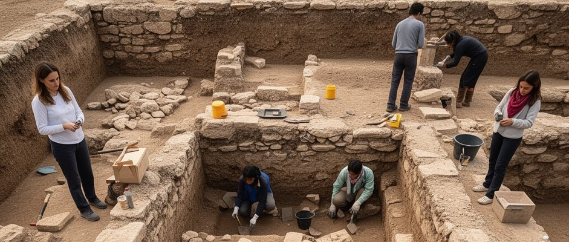

History and objectives
Origins of the programme
The first Ramón y Cajal Programme call was published in the Official State Gazette on 19 April 2001 with a budget of €122.22 million, to incorporate postdoctoral researchers with outstanding and promising careers into the Spanish science, technology and innovation system.
From the outset, applications are submitted both by R&D centres, which offer positions in all knowledge areas, and by candidates. After evaluation and resolution, selected individuals contact the centres to sign incorporation agreements and contracts.
Main objective
To promote the incorporation into research organisations of the Spanish Science, Technology and Innovation System of researchers, both Spanish and foreign nationals, with outstanding careers, so that they acquire the skills and capabilities to obtain a permanent position.
From the 2026 call onwards, the objectives are expanded to facilitate the development of own research lines, group creation, talent retention and the improvement of Spanish participation in ERC calls.

The programme in numbers
Ramón y Cajal Programme fellows (2001–2024)
Fuente: Agencia Estatal de Investigación. Datos de convocatorias RYC 2001–2024.
Programme evolution
Over its 25 years, the programme has incorporated significant changes to adapt to the needs of the R&D&I system:
First call published on 19 April 2001. Budget of €122.22M. 5-year fellowships with employment co-funding and additional research allocation.
Support for the creation of permanent posts is included as an eligible cost. R&D centres that create permanent posts in the fellow's area will receive additional financial support.
With the end of the Juan de la Cierva Incorporation call, a specific track for early-career researchers with a doctoral date between 2017 and 2019 is included. This track is discontinued in 2022.
Specific grants to attract researchers from abroad (talent attraction grant) with increased additional funding are reserved. The fellowship is divided into two phases: first phase of 3 years (€37,800/year) and second phase of 2 years (€46,900/year) conditional on a positive activity assessment (R3 criteria).
The obligation for host institutions to guarantee a commitment to create permanent posts with a profile appropriate to the positions covered is incorporated.
The greatest transformation of the programme: own project funding, interview in the evaluation, ERC incentives, stabilisation with incentives for the host institution, and integration of the Research Consolidation call.
Programme impact

Strengthening research careers
The programme offers a conducive environment for the development of emerging scientific leadership, enabling researchers to build independent career paths.
Multiplier effect
RYC fellows act as catalysts to attract talent and additional resources to institutions in the Spanish R&D&I system.
Institutional benefit
Host institutions gain in talent, resources and prestige, strengthening their research capabilities across all knowledge areas.
European positioning
With the new 2026 modifications, the programme seeks a qualitative leap to position Spain where it belongs in the European Research Area.
25 years of scientific excellence
Discover the complete history of the programme, researcher testimonials and the most notable milestones on the 25th anniversary commemorative website.
25 Years RYC Website